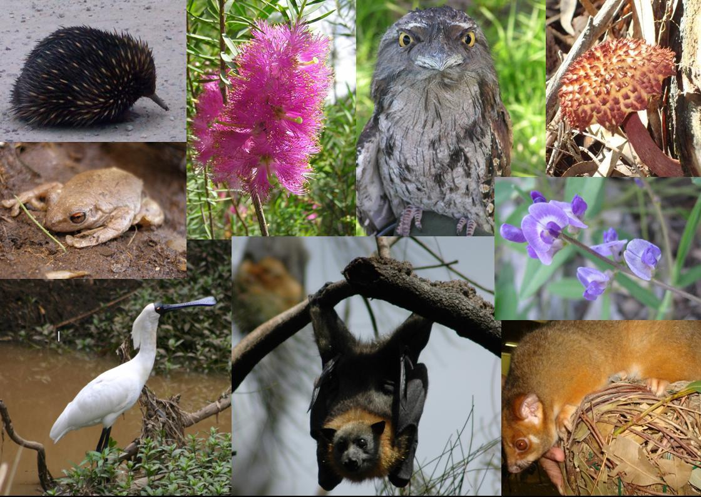

生物多樣性保護
生物多樣性包括遺傳多樣性、物種多樣性和生態多樣性三個層次。基於自然生存權及維持美好生態的環境倫理，生物多樣性是人類必須努力的目標。此外，生物資源提供人類直接及間接的利用價值，人類更應保護及妥善利用生物資源。


自然生態之保護
欲保護自然生態，一方面應設法維持基本的生態系統平衡，使自然與社會的生態復合體處於良性的動態平衡中；另一方面則是應對生物資源進行合理的利用。
全球環境生態保護
地球，是人類及萬物賴以生存的星球，亦是所有環境生態之母。今天地球上所面臨的環境問題，基本上他所影響的是全球環境。任何一個國家無法置身度外的，所謂「環保無國界」，全球的環境問題必須全世界人類共同努力已球克服。